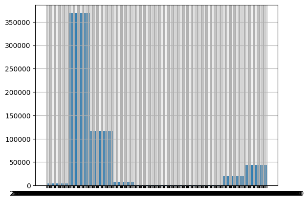
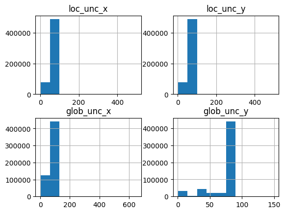

Organize Variables#
Examine and modify datatypes - categorical, continuous, discrete. Organize dataset.
Polygons has most of the data and will serve as the focus of this EDA.
Remove Non-Glacier Columns#
Since the purpose is to find data stories about glaciers rather than the glacier research process, variables pertaining data submission and measurement uncertainty are identified, referencing the User Guide and the GLIMS Description of fields, verified, and removed.
# Import libraries
import os
import numpy as np
import pandas as pd
import geopandas as gpd
import matplotlib.pyplot as plt
import seaborn as sns
# Check working directory
current_directory = os.getcwd()
print("Current Directory:", current_directory)
# Ask pandas to display all columns
pd.set_option('display.max_columns', None)
Current Directory: /Users/yun/Documents/GLIMS/glims_notebooks
# Load Esri shapefiles as geopandas dataframes
polygons = gpd.read_file("GLIMS_20230716/glims_download_13173/glims_polygons.shp")
polygons.dtypes
line_type object
anlys_id float64
glac_id object
anlys_time object
area float64
db_area float64
width float64
length float64
primeclass float64
min_elev float64
mean_elev float64
max_elev float64
src_date object
rec_status object
glac_name object
wgms_id object
local_id object
glac_stat object
subm_id float64
release_dt object
proc_desc object
rc_id float64
geog_area object
chief_affl object
loc_unc_x int64
loc_unc_y int64
glob_unc_x int64
glob_unc_y int64
submitters object
analysts object
geometry geometry
dtype: object
# all are "okay", as expected from documentation
polygons.rec_status.value_counts()
polygons.proc_desc.nunique()
165
# Lots of "None"
polygons.wgms_id.value_counts(normalize=True) # 91% "None"
polygons.local_id.value_counts(normalize=True) # 65% "None"
None 0.649243
GR50.11096E32.29309N_Zr2 0.000173
GIJR115 0.000133
NPI-22 0.000115
NPI-39 0.000115
...
08EC232531E55523N 0.000002
08AC223282E59430N 0.000002
08EA232117E57081N 0.000002
08MG236598E50776N 0.000002
3266 0.000002
Name: local_id, Length: 69166, dtype: float64
# Some of these fields may be related to each other: proc_desc and analysts; submitters, rc_id, geog_area, and chief_affl
polygons[[
#'line_type', #'rec_status', #'glac_stat',
#'area', 'db_area','width', 'length', 'primeclass', 'min_elev', 'mean_elev', 'max_elev',
'anlys_id', 'glac_id', 'glac_name', 'wgms_id', 'local_id',
'anlys_time', 'src_date', 'subm_id', 'release_dt',
'proc_desc', 'rc_id', 'geog_area','chief_affl', 'submitters', 'analysts',
#'loc_unc_x', 'loc_unc_y', 'glob_unc_x', 'glob_unc_y', #'geometry'
]].nunique().sort_values(ascending=False)
anlys_id 557884
glac_id 328115
local_id 69166
glac_name 35112
wgms_id 17239
src_date 1178
subm_id 624
anlys_time 456
release_dt 278
proc_desc 165
analysts 109
submitters 67
rc_id 53
geog_area 49
chief_affl 46
dtype: int64
# Alignments with higher value counts
polygons[[
'proc_desc',
'rc_id',
'geog_area', # 'umbrella' and 'various' categories too large to be useful
'chief_affl',
'submitters',
'analysts'
]].value_counts()
proc_desc rc_id geog_area chief_affl submitters analysts
Semi-automated glacier classification; Semi-automated mapping from optical imagery, with manual editing. 36.0 Asia Nagoya University Sakai, Akiko Sakai, Akiko 133414
Semi-automated glacier classification.; From Randolph Glacier Inventory Version 5.0. See http://www.glims.org/RGI/. Multispectral classification followed by manual correct for blunders and debris. Metadata was added at NSIDC. 761.0 Randolph Glacier Inventory; Umbrella RC for merging the RGI into GLIMS University of Colorado Cogley, Graham Bolch, Tobias; Cogley, Graham; Frey, Holger; Guo, Wanqing; Liu, Shiyin; Moelg, Nico; Nuimura, Takayuki; Paul, Frank; Raup, Bruce H.; Sakai, Akiko 54397
Semi-automated glacier classification.; 8.0 China Chinese Academy of Sciences Liu, Shiyin Guo, Wanqin; Liu, Shiyin 48569
Object-based semi-automated glacier classification. See http://lib.icimod.org/record/29591; The glacier inventory was developed based on remote sensing tools and techniques, using semi-automatic multi-resolution segmentation of Landsat satellite images a 12.0 Himalaya (India, Nepal, Bhutan) International Centre for Integrated Mountain Development (ICIMOD) Bajracharya, Samjwal Bajracharya, Samjwal; Guo, Wanqin; Maharjan, SB; Shrestha, Finu 38201
Semi-automated glacier classification.; From Randolph Glacier Inventory Version 5.0. See http://www.glims.org/RGI/. Multispectral classification followed by manual correct for blunders and debris. Metadata was added at NSIDC. 761.0 Randolph Glacier Inventory; Umbrella RC for merging the RGI into GLIMS University of Colorado Cogley, Graham Bolch, Tobias; Cogley, Graham; Frey, Holger; Guo, Wanqing; Liu, Shiyin; Nuimura, Takayuki; Paul, Frank; Raup, Bruce H.; Sakai, Akiko 27861
...
Manual digitization with the aid of USGS topographic maps to define flow boundaries.; Manual digitization from imagery with assistance to outline flow divides from USGS topographic maps. Each outlined glacier encompasses all ice that contributes to a co 602.0 Various (NSIDC) University of Colorado Beedle, Matthew Beedle, Matthew 1
Manual glacier classification.; Manual glacier mapping from LIMA imagery 15.0 West Antarctica Tongji University HAI, Gang HAI, Gang; LI, Rongxing; Tian, Yixiang; Xie, Huan 1
Advanced atmospheric and topographic correction of S2A scenes, automated pre-classification of glacier areas, manual correction of minor misclassifications and in debris covered areas; Correction of outline for this one glacier. 34.0 Austrian Alps Universitaet Innsbruck Schwaizer (nee Bippus), Gabriele Nemec, Johanna; Schwaizer (nee Bippus), Gabriele 1
Manual Digitization; manual digitization using GLIMSView of the Landsat 7 image. 602.0 Various (NSIDC) University of Colorado Beedle, Matthew Beedle, Matthew 1
; 1. ASTER L1B data acquisition LP DAAC; 2. Orthorectification subsystem VNIR with SRTM90 data; 3. Co registration with Landsat TM data from GLCF University of Maryland; 4. On screen manual digitization; 5. Surface area, length, widht measurements; 6. Sn 20.0 Chilean glaciers, between -18 and -56 degrees latitude Universidad de Chile Zenteno, Pablo Zenteno, Pablo 1
Length: 191, dtype: int64
# Continuous Temporal, not defined in documentation, data release?
polygons.release_dt.hist();

# Positional Uncertainty, Discrete
polygons[['loc_unc_x', 'loc_unc_y', 'glob_unc_x', 'glob_unc_y']].hist();

# Remove submission-related columns
polygons1 = polygons.drop(labels=[
'rec_status', 'wgms_id', 'local_id',
'subm_id', 'release_dt', 'proc_desc',
'rc_id', 'geog_area', 'chief_affl',
'loc_unc_x', 'loc_unc_y', 'glob_unc_x', 'glob_unc_y',
'submitters', 'analysts'
], axis=1)
polygons1.dtypes
line_type object
anlys_id float64
glac_id object
anlys_time object
area float64
db_area float64
width float64
length float64
primeclass float64
min_elev float64
mean_elev float64
max_elev float64
src_date object
glac_name object
glac_stat object
geometry geometry
dtype: object
Remove Non-Glacier Rows#
Remove polygon features representing non-glacier boundaries.
# Most entities are glacier boundaries.
polygons1.line_type.value_counts()
glac_bound 564112
debris_cov 1005
intrnl_rock 452
pro_lake 291
supra_lake 18
basin_bound 9
Name: line_type, dtype: int64
# Remove non-glacier entities.
polygons2 = polygons1[polygons1.line_type=="glac_bound"]
#polygons2.line_type.value_counts()
polygons2.drop('line_type', axis=1, inplace=True)
/var/folders/13/hf_sfnls1lq6kn8vsc92q40h0000gn/T/ipykernel_37446/1093122923.py:4: SettingWithCopyWarning:
A value is trying to be set on a copy of a slice from a DataFrame
See the caveats in the documentation: https://pandas.pydata.org/pandas-docs/stable/user_guide/indexing.html#returning-a-view-versus-a-copy
polygons2.drop('line_type', axis=1, inplace=True)
polygons2.dtypes
anlys_id float64
glac_id object
anlys_time object
area float64
db_area float64
width float64
length float64
primeclass float64
min_elev float64
mean_elev float64
max_elev float64
src_date object
glac_name object
glac_stat object
geometry geometry
dtype: object
# Minimal NAN's address later
polygons2.isna().sum()
anlys_id 0
glac_id 0
anlys_time 0
area 0
db_area 0
width 0
length 0
primeclass 0
min_elev 0
mean_elev 0
max_elev 0
src_date 0
glac_name 12
glac_stat 0
geometry 0
dtype: int64
polygons2.sample(5)
| anlys_id | glac_id | anlys_time | area | db_area | width | length | primeclass | min_elev | mean_elev | max_elev | src_date | glac_name | glac_stat | geometry | |
|---|---|---|---|---|---|---|---|---|---|---|---|---|---|---|---|
| 104310 | 130844.0 | G072072E36664N | 2014-04-15T00:00:00 | 0.000 | 0.410174 | 0.0 | 0.0 | 0.0 | 5000.0 | 5276.0 | 5641.0 | 2007-08-25T00:00:00 | None | exists | POLYGON Z ((72.07615 36.66281 0.00000, 72.0762... |
| 44949 | 442871.0 | G077399E43173N | 2015-07-16T00:00:00 | 0.173 | 0.172757 | 0.0 | 0.0 | 0.0 | 3663.0 | 0.0 | 3993.0 | 1999-09-09T00:00:00 | None | exists | POLYGON Z ((77.39800 43.17062 0.00000, 77.3979... |
| 237809 | 299044.0 | G295993E65654N | 2014-12-01T00:00:00 | 0.135 | 0.134802 | 0.0 | 0.0 | 0.0 | 0.0 | 0.0 | 0.0 | 1999-09-14T00:00:00 | None | exists | POLYGON Z ((-64.00870 65.65072 0.00000, -64.00... |
| 420743 | 541927.0 | G072090E36385N | 2018-07-01T00:00:00 | 0.000 | 0.112679 | 0.0 | 0.0 | 0.0 | 0.0 | 0.0 | 0.0 | 2002-07-10T00:00:00 | None | exists | POLYGON Z ((72.09205 36.38447 0.00000, 72.0915... |
| 440037 | 620766.0 | G084602E43675N | 2018-07-01T00:00:00 | 0.000 | 0.794492 | 0.0 | 0.0 | 0.0 | 0.0 | 0.0 | 0.0 | 2002-07-10T00:00:00 | CN5Y741B0068 | exists | POLYGON Z ((84.59901 43.66686 0.00000, 84.5985... |
#polygons2.to_csv("GLIMS_20230716/polygons2.csv", index=False)